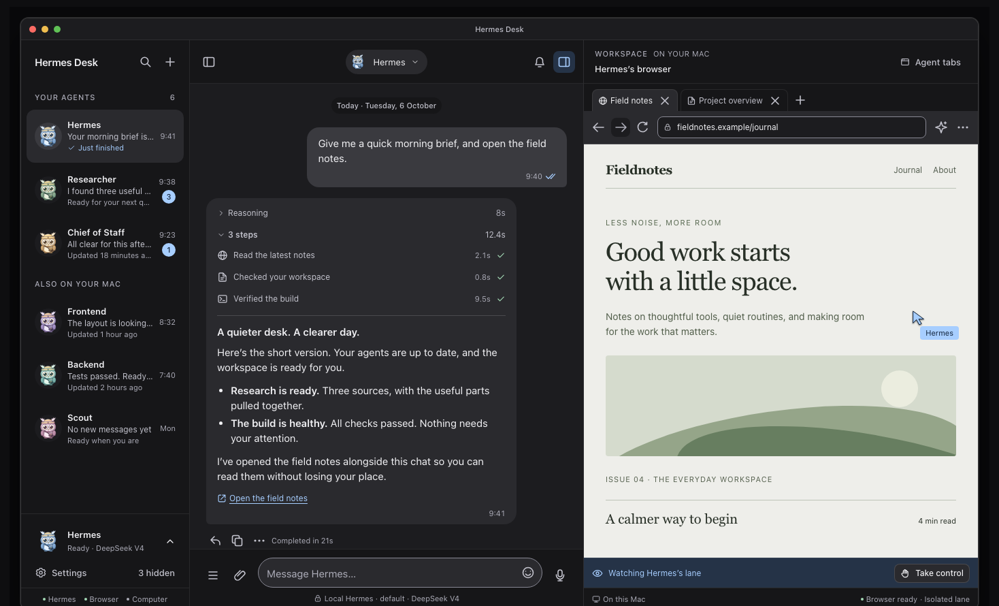

Every agent, in one place
Chat with any Hermes profile on your Mac. Each one keeps its own model route, history, and voice — and its own expression while it works.
On your Mac / v0.1.0
A local-only home for the Hermes agents already on your Mac. Every profile gets a face and a place, conversations have room to breathe, and the workspace sits right beside the chat.
Pip, the courier owl
Ready — a familiar face.
Built for the Mac in front of you.
The desk
No more tab archaeology. Your agents, their conversations, and the work they do share one place — with the details where you can see them.
Chat with any Hermes profile on your Mac. Each one keeps its own model route, history, and voice — and its own expression while it works.
Bring specialists into one conversation with parallel sessions, per-room approvals, and a durable token budget.
Agents open pages and files in a native lane. Watch the work happen, then take control without losing the thread.
Reasoning, tool steps, and timings stay visible. Approve the work, or send it back with a clearer ask.
Agents can render data-only cards — stats, tables, bar charts, checklists. No HTML, scripts, links, or remote resources.
Chat text, rooms, routines, files, and settings stay on the Mac. Hermes Desk sends only model requests to the providers your Hermes profiles already configure.
The idea
Less noise. More room.
Your agents. Your Mac. Your call.
The workspace
Your agents on the left. The conversation in the middle. Their workspace beside it. One window, and nothing hidden behind another tab.

Pip avatars make the roster scannable. Every profile keeps its own model route, history, and voice, so switching agents never means losing your place.
Illustrative design preview with local fixture content. Pip is the actual in-app mascot, not a look-alike.
How it works
Hermes Desk is the front door to the Hermes install already on your Mac. It does not host your agents, and it does not hold a cloud account.
Chats, rooms, routines, files, and settings stay on this Mac.
Get started
Hermes Desk runs beside the Hermes install you already trust. Clone the source and start it locally. There is no hosted update feed and no background updater.
hermes CLI on your PATH
The app starts its own loopback-only hermes serve and stops it on
quit. Builds use ad-hoc signing; macOS may ask for approval.
$ git clone https://github.com/DevvGwardo/hermes-desk.git
$ cd hermes-desk
$ npm ci
$ npm run dev:localFAQ
The short answers. The source is open if you want the long ones.
Only model requests leave your Mac, and only to the providers already configured in your Hermes profiles. Chats, rooms, routines, files, settings, and credentials stay local. There is no analytics service and no hosted account.
No account for Hermes Desk. It connects to the Hermes installation on your Mac
and uses the profiles you already have. A trusted hermes CLI needs
to be on your PATH, or in ~/.hermes/hermes-agent/venv/bin.
Yes — through the tools your Hermes profile already exposes. Tool steps and approvals stay visible in the conversation, and agents can open pages in a native workspace lane beside the chat. You can take control at any time.
Profiles you enable can render data-only stat, table,
bar_chart, and checklist cards through a local MCP
server. There is no HTML, script, link, or remote resource execution. Checklist
ticks are local notes and are never sent back to the agent.
The supported packaged build is macOS on Apple silicon. The source is available to read and build, but other platforms are not part of the supported path today.
Pull the source and run npm run install:local again. There is no
hosted update feed, no background updater, and no telemetry. You decide when the
code changes.
The app code, the Pip / Dash / Wisp character rigs and motion engine, and the README renders. Service logos in the app remain the trademarks of their owners and are used only to identify integrations.
Open source
Read every line, file an issue, or build it for your own Mac.